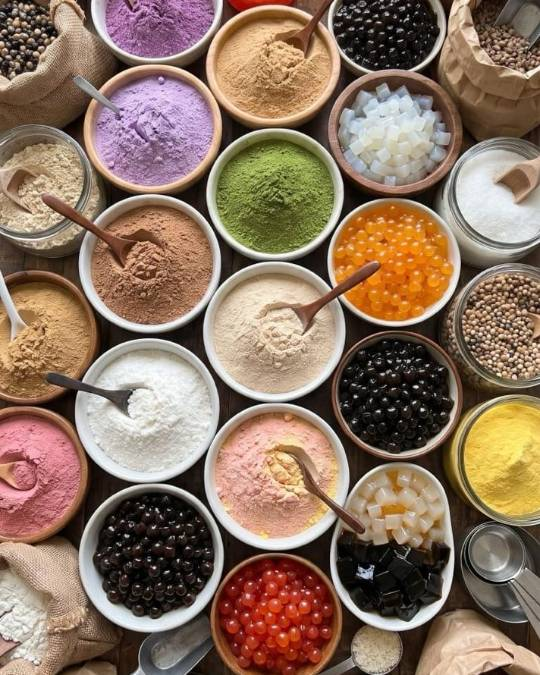
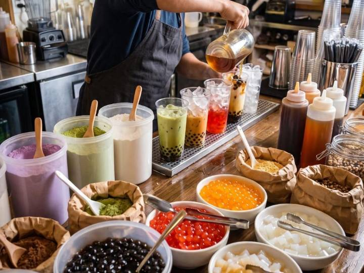
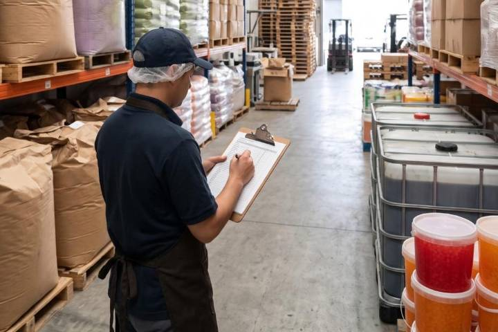

Insumos asiáticos para food service · Latinoamérica
Insumos asiáticos para la industria gastronómica de Latinoamérica.
Vermilion Foods abastece insumos asiáticos no perecederos —empezando por todo lo que necesita un menú de bubble tea— a hoteles, restaurantes, cafeterías y distribuidores de América Latina.

Nosotros
Un puente entre productores asiáticos y cocinas latinoamericanas.
Vermilion Foods es un proveedor de insumos asiáticos de alimentos y bebidas para empresas. Conectamos a fabricantes en Asia con operadores gastronómicos de Latinoamérica que necesitan productos consistentes, comunicación clara y un abastecimiento confiable.
Hoy nos enfocamos en la categoría de bubble tea, con un portafolio pensado para crecer junto al menú de nuestros clientes. Trabajamos exclusivamente con productos no perecederos, lo que simplifica la logística y mantiene una calidad predecible.
Vermilion Foods es un nombre comercial de VERMILION ALFA GROUP LLC.

Qué ofrecemos
Un portafolio enfocado y no perecedero para operadores profesionales.
-
Tés y bases para bebidas
Hojas de té, polvos para té con leche, polvos saborizados y cremas no lácteas.
-
Toppings
Perlas de tapioca, popping boba y jaleas en formatos para food service.
-
Jarabes y sabores
Jarabes, concentrados de fruta y endulzantes para bebidas consistentes a gran volumen.
-
Especialidades asiáticas de despensa
Una selección en crecimiento de insumos asiáticos no perecederos para cocinas profesionales.
La disponibilidad de productos varía según el mercado. Contáctenos para conocer el portafolio actual.
A quién servimos
Hecho para el canal HORECA.
-
Tiendas de bubble tea y cafeterías
Los insumos base para la operación diaria.
-
Restaurantes
Insumos asiáticos para cocina y programa de bebidas.
-
Hoteles y catering
Abastecimiento confiable en formatos institucionales.
-
Distribuidores y mayoristas
Un aliado de abastecimiento para la categoría asiática.
Cómo trabajamos
Del origen a su operación.
-
Abastecimiento
Seleccionamos productos de fabricantes establecidos en Asia.
-
Cadena de suministro
Coordinamos el recorrido desde el origen hasta el mercado de destino.
-
Servicio
Atención en español e inglés, antes y después de cada pedido.

Atendemos a clientes empresariales en toda Latinoamérica.
Contáctenos para confirmar disponibilidad en su país.
ContáctenosContacto
Hablemos de su operación.
Para información de productos, precios y disponibilidad, escriba directamente a nuestro equipo. Atendemos únicamente a empresas.
Escríbanos